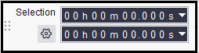

Selection Toolbar
- If you change the Selection Format, all subsequent project windows you open will respect that change.
- You can make precise cursor or selection positioning by editing the Selection Toolbar digits.
- Selection Toolbar is normally at the bottom of the Audacity window, but like any of the Toolbars, it can be moved as desired by dragging the serrated edge on its left side.
- 
Changing the display format with the cog-wheel
Clicking on the cog-wheel will bring up a menu that enables you to change the manner in which the details of your selection are displayed:
- Start and End of selection: the start time and the end time of your selection (default setting)
- Start and Length of selection: the start time and the length of your selection
- Length and End of selection: the length and the end time of your selection
- Length and Center of selection: the length and the time at the center of your selection
Precise cursor or selection positioning by editing the Selection Toolbar digits
Using the "Start" and "End/Length", you can precisely place the cursor position or selection region without using a mouse to click or drag in the waveform, and without zooming in first to find the exact spot.
You can edit the individual digits representing time or other formats in the time boxes so as to change the cursor position or selection region on the waveform. Using a mouse, click on a digit in one of the boxes then use the mouse wheel or up and down arrow on the keyboard to increment the value, or type the required value. Use left and right arrow to navigate quickly to adjoining digits, and Tab or Shift + Tab to navigate to adjoining boxes.
Selection Toolbar is also fully accessible using only the keyboard. See Audacity Selection for how to use Selection Toolbar with the keyboard.
|
Selections made by modifying the Selection Toolbar time digits with either keyboard or mouse will always snap to the current selection format, even if the Snap checkbox is unchecked. Note particularly that changing the Length of a selection by modifying the Selection Toolbar time digits may alter the start of the selection, if the start of the selection is not currently at an exact multiple of the selection format. That is, by editing the Length, the entire selection, including the start, will snap to the current selection format. |
Selection Formats
To access the context menu listing the selection formats, click the triangle to right of either box. You can also select in or right-click over any digit in a box (or use a keyboard equivalent). The following table lists the 16 available formats.
Changing this in any project will affect the current project and any subsequent projects that you open. It will not affect any projects that you already have open.
Selection Format Example Notes seconds 005,408 seconds seconds + milliseconds 005,408.276 seconds hh:mm:ss 01 h 30 m 08 s Hours, minutes, seconds dd:hh:mm:ss 00 days 01 h 30 m 08 s Days, hours, minutes, seconds hh:mm:ss + hundredths 01 h 30 m 08.51 s hh:mm:ss + milliseconds 01 h 30 m 08.512 s Default hh:mm:ss + samples 01 h 30 m 08 s + 22500 samples samples 238,514,850 samples hh:mm:ss + film frames (24 fps) 01 h 30 m 08 s + 12 frames film frames (24 fps) 129,804 frames hh:mm:ss + NTSC drop frames 01 h 30 m 08 s + 14 frames American video format hh:mm:ss + NTSC non-drop frames 01 h 30 m 03 s + 02 frames NTSC frames 162,092 frames hh:mm:ss + PAL frames (25 fps) 01 h 30 m 08 s + 12 frames European video format PAL frames (25 fps) 135,212 frames hh:mm:ss + CDDA frames (75 fps) 01 h 30 m 08 s + 37 frames CDDA frames (75 fps) 405,637 frames Audio CD frames bar:beat 107 bar 03 beat bar:beat:tick 107 bar 03 beat 02
Changing the selection format does not change the units displayed on the Timeline or in the Time Toolbar.
|